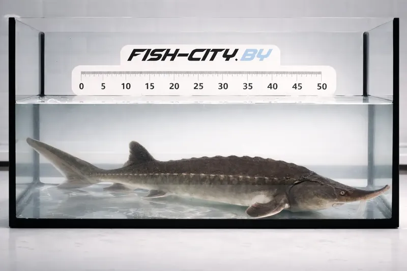

Живая рыба
Осетр ленский живой 1000-1500 г, РБ
Цена и наличие
Цена уточняется. Нет в наличии.
Данные на 23.11.2026.
Характеристики
- Размерный ряд
- 1000-1500 г
- Вид разделки
- непотрошеный
- Производитель
- РБ
Описание
Этот изысканный продукт предлагает исключительное сочетание нежного вкуса, невероятной текстуры и выдающихся питательных характеристик.
ОСНОВНОЕ
В вес 1-1,5 кг входят одна/две рыбы. Также, вместо живой/свежей рыбы, можно приобрести мальков ленского осетра в пруд. Пищевая ценность на 100 г продукта белки – 16.4 г, жиры – 10.9 г, углеводы – 0 г Энергетическая ценность на 100 г продукта 163 ккал Тип питания низкокалорийный продукт, экологичный продукт Упаковка размерный ряд рыбы от 1 до 1,5 кг; в упаковке 1-2 рыбы Условия и срок хранения хранить не более 12 часов в пакете с кислородом с момента упаковки
ДОПОЛНИТЕЛЬНО
Живой ленский осетр весом от 1 до 1,5 кг — свежая рыба белорусского производства, подходящая для домашнего приготовления и праздничного стола. Такой размер удобен для запекания осетра целиком, приготовления на гриле или разделки на порционные куски и стейки. Мясо ленского осетра плотное, нежное и сочное, с насыщенным рыбным вкусом. Осетр хорошо подходит для разных способов приготовления: его можно запекать в духовке с овощами и зеленью, жарить, тушить, готовить на мангале или гриле, использовать для ухи и других горячих рыбных блюд. Осетр весом 1000–1500 г удобен для небольшой семьи или компании. Рыбу можно приготовить целиком для красивой подачи либо разделить на несколько порций. Она хорошо сочетается с лимоном, свежей зеленью, овощами, сливочными соусами и специями. Продажа осетра в живом виде позволяет получить максимально свежий продукт непосредственно перед разделкой и приготовлением. Это особенно важно для блюд, где вкус и качество исходного продукта играют основную роль. В продаже — живой ленский осетр весом 1–1,5 кг, выращенный в Республике Беларусь. Фактический вес конкретной рыбы может отличаться в пределах заявленного диапазона. Заказать живого ленского осетра 1000–1500 г можно для запекания, приготовления на гриле, семейного ужина или праздничного стола. При выборе количества стоит учитывать способ приготовления, разделку и необходимое количество порций.